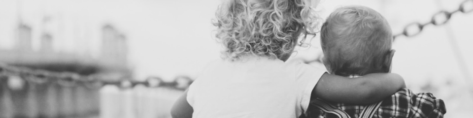
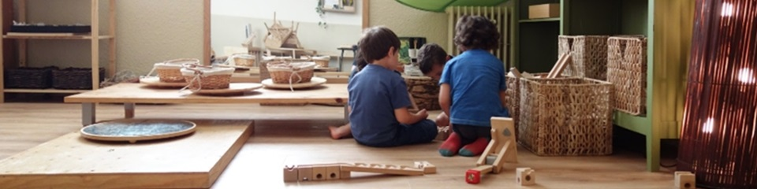
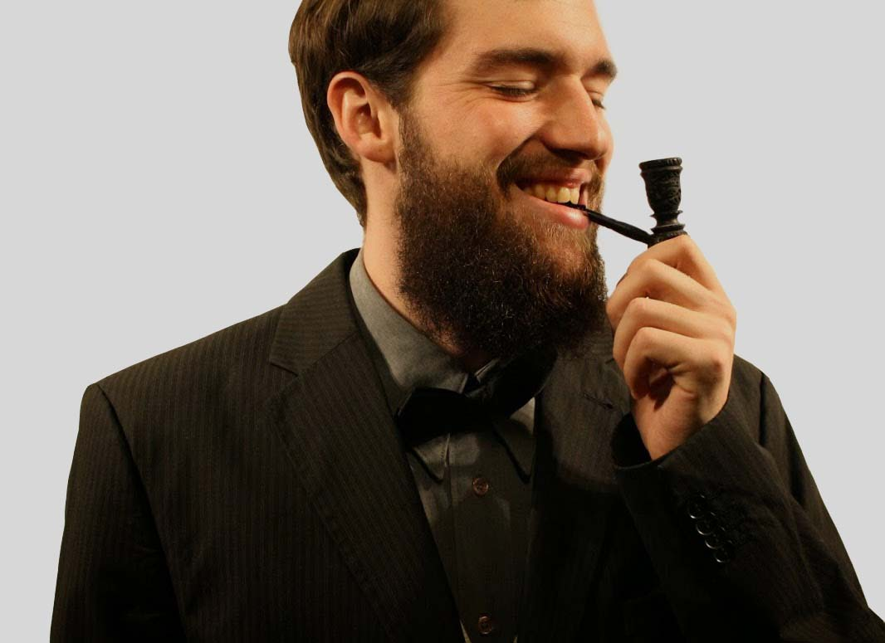
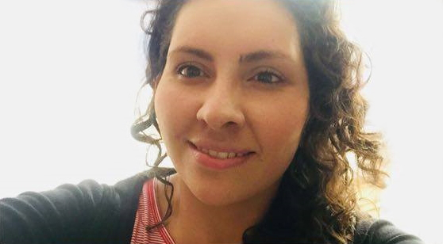
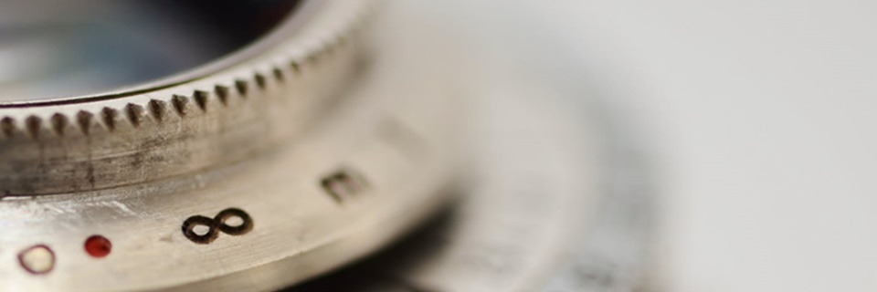

En Kun Koro ofrecemos asesoramiento orientado a equipos de comedor de escuelas públicas o privadas y proyectos de tiempo libre que quieran acercarse o profundizar en un acompañamiento respetuoso hacia las criaturas, las familias y el propio equipo.
Kun Koro significa "con corazón" en Esperanto. Para nosotros representa acompañar desde el corazón, desde un lugar sentido, desde las necesidades de las criaturas, el vínculo y el afecto.
Trabajamos desde hace años en la franja de mediodía de la escuela pública viva y activa Congrés-Indians. Cuando la escuela abrió sus puertas, ofreciendo un acompañamiento amoroso y respetuoso hacia las necesidades de las criaturas en un entorno escolar público, se puso de manifiesto también la necesidad de cuidar las franjas no lectivas, como el mediodía. Esto significó reflexionar sobre algunas situaciones normalizadas en la mayoría de comedores escolares como obligar a comer ciertas cantidades o alimentos, tener que hacer la siesta, premiar o castigar ciertos comportamientos, comer todos juntos en un gran comedor, etc.
Poco a poco fuimos forjando un proyecto de mediodía más respetuoso con las necesidades y ritmos de las criaturas, que está en constante evolución. Nuestra experiencia y aprendizaje nos ha permitido desarrollar una capacidad de observación y una metodología que pensamos puede ser de interés para otros proyectos que se planteen un acompañamiento más respetuoso.
Trabajamos conjuntamente con:
· Senda. Centro de Acompañamiento a la Infancia y la Familia.
· Del Campo al Cole. Entidad líder en España en la promoción de la alimentación escolar sostenible y saludable.
Ofrecemos asesoramiento orientado a equipos de comedor de escuelas públicas o privadas y proyectos de tiempo libre que quieran acercarse o profundizar en un acompañamiento respetuoso hacia las criaturas, las familias y el propio equipo.
Trabajamos sobre las necesidades de cada proyecto y sus intereses, ofreciendo observación, reflexiones, experiencias y propuestas acordes a cada proyecto educativo y de comedor. Acompañamos a los proyectos para que traten de cubrir más las necesidades de las criaturas.
Dividimos el contenido en tres apartados básicos:

· Acompañamiento emocional y actitudes del adulto acompañante
Observamos posibles mejoras y carencias en cómo nos relacionamos con el entorno y las criaturas como adultos acompañantes durante las comidas y a lo largo de la franja de mediodía. Ofrecemos formación, reflexiones y experiencias para trabajar en este sentido.
· Logística al servicio de las necesidades de las criaturas
Estudiamos la logística del proyecto interesado y detectamos posibles cambios logísticos que repercutan positivamente en las criaturas.
Espacios, materiales o propuestas disponibles, tiempos de espera cortos, cuantos adultos hay en el espacio y como se sitúan, son algunas de las cuestiones más evidentes. Sin embargo, también indirectamente se puede beneficiar a las criaturas desde la logística, a través de lograr más bienestar en los acompañantes, familias, maestras y criaturas compañeras.
En relación a estas cuestiones, aportamos nuestra experiencia y elaboramos propuestas de mejora a nivel logístico en función de lo observado y las necesidades y demandas del proyecto interesado.

· Espacios y materiales. Medios para la relación
Aportamos nuestra experiencia en cuanto a la disposición de los espacios, su uso y sus materiales para que, en conjunto con la logística y el acompañamiento, creen una franja de mediodía lo más agradable, respetuosa y rica posible para las criaturas y también los adultos.
Si quieres solicitar un asesoramiento o que te agreguemos a nuestra lista de difusión, escríbenos a: info@kunkoro.kiwi
"Muchísimas gracias por compartir estos días con nosotros. Ha sido un regalo teneros y que nos acompañarais un poquito en este camino que vamos haciendo. El dossier final me parece precioso. Muy útil y especialmente interesante tener algo físico donde quede recogido un poco lo que hemos vivido estos días."
Tanit Solana. Escola 30 Passos.
Cursos
Actualmente estamos preparando una serie de cursos en varias plataformas de cursos online, así como cursos presenciales en Barcelona.
Próximamente pondremos aquí la información.
También puedes apuntarte aquí a nuestro boletín de novedades.
Ha habido un error.
Se ha realizado tu suscripción.
Equipo
Alrededor del 2015 nos empezaron a surgir las ganas de compartir la experiencia que suponía acompañar el mediodía de la escuela y empezamos a valorar, junto a compañeras del mediodía de la escuela Congrés-Indians, la posibilidad de aportar lo aprendido a otros proyectos que buscasen un acompañamiento específico para la franja de mediodía. Así, en 2018, Elina y Noel nos animamos a empezar y Kun Koro tomó forma.

Noel Cresencio González
Acompañante infantil. Psicomotricista. Psicoterapeuta de Integración Psico-Corporal en formación.
Crecí en un entorno de educación viva y activa en casa. Mi madre creó, junto a mi padrino Cristóbal Gutiérrez, el proyecto La Casita en Barcelona (que se llamó después La Caseta) y posteriormente ambos crearon también la escuela viva El Roure. Mi padre es maestro de tai-chi, chi-kung, artes marciales y crecimiento personal. Ambos han estado toda su vida en constante formación en crecimiento personal, en diferentes líneas. Yo asistí a algunas escuelas públicas por ser mayor para ir a La Casita y cuando estuvo creada la escuela El Roure, acabé primaria allí antes de ir al instituto. Al cabo de dos cursos me fui a Inglaterra, a la escuela internacional Brockwood Park School, fundada en 1969 por el filósofo y maestro espiritual Jiddu Krishnamurti. Al volver, dos años después, empecé mi vida laboral y mi formación específica.
Siguiendo a mi padre me fui a vivir a Granada, donde me independicé trabajando de camarero aprendiendo a realizar esas tareas con plenitud. Mi formación la inicié en el cine, la fotografía y la interpretación en la escuela Filmosofía, aunque siempre estuve en contacto con el mundo del crecimiento personal y la educación, debido a la trayectoria personal y profesional de mis padres. Esta influencia y mis propios intereses me llevaron a trabajar en la escuela Congrés-Indians en la franja de mediodía, desde Abril del 2011. Poco después, entré a formar parte también del equipo de apoyo a las maestras y pude profundizar en mi labor y abordar nuevos aprendizajes.
También he trabajado como asistente de terapeuta psicomotriz, con Verónica Antón en Senda, acompañando a varios grupos de niños. Esta experiencia me permitió acercarme a la vertiente terapéutica de la psicomotricidad de B. Aucouturier y aprender junto a Verónica. Sin embargo, sin duda mi fuente principal de experiencias con niños y niñas es la escuela Congrés-Indians, a través de las cuales sigo aprendiendo día a día cómo acompañarles para brindarles mejor lo que necesitan.
Me he formado en cursos de Comunicación Consciente con Chema Irusta, Acompañamiento Emocional, Agresividad y Conflictos en Senda, y Seitai en Espaidó. También he cursado las formaciones anuales de Educación viva y activa con Jordi Mateu, Práctica Psicomotriz Aucouturier Preventiva en la AEC, la formación anual de la escuela viva El Roure y actualmente curso la formación terapéutica de 5 años de Integración Psico-Corporal, en la ETIP.
Siempre me han burbujeado ideas de todo tipo de cambios y soluciones para el mundo, productos y empresas, formas de organización y decisión, y en los últimos años han ido tomando forma algunos proyectos. En 2018 co-inicié Kun Koro, para asesorar a comedores respetuosos desde la experiencia en el mediodía de la escuela Congrés-Indians. En 2019 cree Haruki, un catálogo de productos recomendados para una buena vida, según mi criterio. Desde 2017 estudio sobre la industria de las criptomonedas y sobre economía básica, y en 2020 publiqué esta guía sobre cómo mejorar tu libertad financiera desde una visión de crear en conjunto un mundo mejor para todos y todas. También en 2020 fundé la red Hurime, un proyecto que agrupa a familias y profesionales del acompañamiento con un enfoque de respeto hacia las necesidades de cada uno.
Siempre estoy trabajando en ampliar y mejorar mis proyectos y gestando nuevas ideas, que voy agrupando para referencia en mi web (noelcresencio.com) conforme van cogiendo forma.

Elina Acosta
Graduada en Educación Infantil.
Desde el año 2000 me sentí llamada a explorar ámbitos que se acercaran a las relaciones entre las personas. Empecé mis estudios en Argentina donde realicé un recorrido intenso y diverso entre la psicología, el arte dramático y la teología. Estas ramas me hicieron conectar con las relaciones humanas y los múltiples caminos que abordamos para acercarnos o alejarnos unos de otros. En 2013, ya ubicada en Barcelona, finalicé mis estudios de Grado en Educación Infantil en la Universidad Autónoma de Barcelona.
Estos años de estudios me despertaron un enorme interés en diferentes pedagogías. Antes de acabar la carrera, en 2011, contacté con la escuela pública Congrés-Indians, ya que me interesaba aprender y compartir experiencias sobre la educación viva y activa. Así fue como empecé el camino como voluntaria y luego me uní al equipo de mediodía de la escuela, el cual coordino actualmente. La experiencia de estos años en la escuela, tanto de voluntaria, como de acompañante de mediodía y de educadora en la franja lectiva, me han movido a formarme con Verónica Antón (Senda) en el acompañamiento emocional y en proyectos de pedagogía viva y activa, también con Jenny Silvente en el juego con "mini mons". Actualmente, estoy formándome como Directora de tiempo libre en Pere Tarrés.
Contenidos: Noel Cresencio, Elina Acosta y Lorena Sala
Diana, de Esto no es una escuela. Un bonito escrito sobre la esencia de Congrés-Indians, como una de las escuelas públicas de referencia en acompañamiento respetuoso.
Verónica Antón. Senda. Los adultos deben sostener a las criaturas (y no al revés) pero no significa que no puedan estar con lo que les pase a ellos. El conocimiento de las emociones no se educa, se vive día a día cuando el entorno permite mostrarse.
Verónica Antón. Senda. Sencillo artículo sobre la importancia de acompañar los primeros años de las criaturas respetando sus necesidades profundas (sin confundirlas con sus deseos o voluntades del momento) y acompañando los posibles momentos de frustración, pero sin que estos sean creados expresamente por el adulto para que la criatura "aprenda" a tolerar la frustración.
El Roure. Breve escrito sobre cómo se acompaña de forma global y de dentro hacia fuera el crecimiento de los niños, niñas y adolescentes en El Roure, un acompañamiento no delegado a los educadores sino compartido con la familia, que tiene ese derecho y responsabilidad.
El Roure. Sobre la importancia de respetar el impulso interno de aprendizaje de cada uno y la necesidad de ofrecer un entorno educativo rico y un acompañamiento respetuosa para que los niños, niñas y adolescentes se puedan desarrollar desde ahí.
Begoña González Minguillón, 2019. Coordinadora de la escuela viva El Roure. "Creo que es una responsabilidad pendiente generar espacios abiertos para adolescentes [...] donde se pueda dar la escucha que necesitan y reclaman, siendo protagonistas de sus propios procesos de aprendizaje y maduración, siguiendo su propio ritmo y manera, sin ser juzgados por sus tentativas de búsqueda".
José Contreras Domingo, 2019. Profesor titular del Departamento de Didáctica y Organización Educativa de la Universidad de Barcelona. Remei Arnaus Morral, 2019. Profesora jubilada del Departamento de Didáctica y Organización Educativa de la Universidad de Barcelona. "Entendemos que lo importante es un espacio en el que puedan tener el tiempo, el sosiego respecto a las presiones exteriores, las relaciones y las reflexiones para descubrirse, para reconocer y clarificar sus deseos, y para explorar quienes son, quienes quieren ser y qué caminos quieren probar para ir encontrando su sentido de sí y su dirección en la vida".
Brigitte Burchartz. Acercamiento a la metodología de trabajo de la línea terapéutica Integración Psico-Corporal, desarrollada por Marc Costa, la cual aporta claves interesantes al acompañamiento emocional y las relaciones en cualquier entorno.
Libros
· Etapas del desarrollo. Rebeca Wild. Breve acercamiento a las particularidades de cada septenio de desarrollo hasta llegar a la edad adulta con algunos ejemplos y la fuente de experiencia y conocimiento que supuso el Pestalozzi y el León Dormido.
· Libertad y límites: amor y respeto. Rebeca Wild. Explora el sentido y la importancia de la complementareidad de la libertad y los límites en la crianza. Además aporta elementos para comprender cuándo y cómo poner los límites para que realmente cumplan su función de expresar amor y respeto por los procesos vitales.
· Los pilares del corazón. Pablo Palmero. Lenguaje claro y ejemplos del día a día para hacer llegar la importancia del afecto y el amor en las relaciones y mostrar las posibles repercusiones personales y sociales ante la falta de afecto y conexión. Inspirado en la Integración Psico-Corporal.
· Ser o no ser hombre. Viaje a la esencia de la identidad masculina. Alberto Mena. Un recorrido por los instintos del ser humano y etapas del desarrollo y un acercamiento a las particularidades del niño y hombre en su proceso de construcción de su identidad masculina. Inspirado en la Integración Psico-Corporal.
· Comunicación NoViolenta: un lenguaje de vida. Marshall Rosenberg. Presenta una metodología concisa para llegar a abordar los conflictos desde la empatía y dar voz a las necesidades y sentimientos de todos los implicados.
· Ser padres desde el corazón. Inbal Kashtan. Cómo criar a los hijos con más conexión y empatía a través de la metodología de la Comunicación NoViolenta.
· El sentido de lo humano. Humberto Maturana. Invitación a recuperar la vida matrística de la infancia: atrevernos a ser nosotros mismos, no aparentar, ser responsables de nuestro vivir sin pedirle al otro que dé sentido a nuestra vida.

Videos
· El Roure, una escola viva. Antonio Laforgia. Un bonito documental sobre la escuela El Roure. Una muestra de la profundidad con que se acompaña a las criaturas y adolescentes, a las familias y al equipo.
· El Circo de las Mariposas. Joshua Weigel & Rebekah Weigel. Un cortometraje sobre la importancia de la autonomía sin el abandono.
La Edad Olvidada
La adolescencia es una edad olvidada y algo maldita; la mirada que, socialmente y en general, se tiene sobre ella está cargada de negatividad: es una etapa difícil, conflictiva, los adolescentes son dispersos, vagos, poco colaboradores, incomprensibles, arrogantes, narcisistas, rebeldes, emocionalmente inestables, etc. A menudo los adultos se ven sobrepasados por la energía adolescente, aparece la frustración, la incomunicación y se establece el control, la prohibición o el castigo como estrategias de convivencia.
Curiosamente cada una de las personas adultas hemos sido adolescentes y podemos conectar con nuestra experiencia en esa etapa, conocer a través de lo vivido, lo que necesitamos en su momento, lo que era importante para nosotras y lo que nos limitaba o nos dificultaba el crecimiento. Todo eso puede ser inspirador a la hora de comprender a otros adolescentes, a los adolescentes de hoy.
En la infancia, para obtener seguridad emocional, necesitamos la imagen inconsciente de que los adultos saben lo que conviene hacer y lo hacen, por tanto, no se equivocan. Además, necesitamos su reconocimiento y aprobación, su amor, por lo que son nuestros modelos, a los que seguimos e imitamos. Según mi experiencia personal y mi observación como profesional de la educación, en la adolescencia se nos hunde, más o menos repentinamente, la fantasía infantil del “perfecto mundo adulto” que teníamos en la infancia.
Al llegar a la preadolescencia, comienza un enorme cambio evolutivo, todo el organismo se pone en acción para generar el paso de la edad infantil a la edad adulta, una transición fundamental en la vida de cualquier persona. Esa convulsa revolución es la adolescencia. Empezamos a tener cierta autonomía emocional y mayor capacidad para tener conciencia de nuestra realidad y la de los demás, porque la seguridad afectiva que viene del adulto ya no es tan necesaria.
El adulto y su mundo empiezan a verse con mayor amplitud, con su aspecto negativo incluido; sus errores, incoherencias y debilidades. Hay mayor capacidad de ver la globalidad y de objetivar y al mismo tiempo la mirada está muy condicionada por la conexión y el vínculo afectivo que se establezca con los adultos. La mirada hacia los adultos es muy selectiva, radical a menudo, por la que suelen aparecen adultos a los que se rechaza y adultos a los que se adora.
El mundo aparece como un lugar a descubrir, más allá del entorno familiar y de sus valores. Ante ese despertar ilimitado, el adolescente cierra los ojos y se evade o cuestiona y se rebela, desea cambiar el mundo. Es una etapa vulnerable y delicada, en la que brota un profundo deseo de libertad, de explorar lo desconocido, a menudo tocando los límites establecidos por la familia o la sociedad. Todo es posible con la rebosante energía adolescente y al mismo tiempo no existe nada más que el momento presente y su intensidad, sea la del goce o la de la angustia.
La conciencia sobre sí mismo es mucho mayor y comienza un complejo proceso de construcción consciente de la identidad; es decir, me empiezo a preguntar quién soy y quien quiero ser. Para conseguir tener conciencia de sí mismas, las personas adolescentes necesitan distinguirse de la madre y del padre, distanciarse de ellos, reafirmarse en su diferencia. Necesitan crear una imagen de sí mismas, buscar modelos fuera de la familia, pertenecer al grupo de iguales de forma intensa para sentir la complicidad ante tamaña empresa.
Creo que es una responsabilidad pendiente generar espacios abiertos para adolescentes que puedan contribuir a una experiencia profundamente fructífera, tanto para los mismos adolescentes como para sus familias; espacios donde se pueda dar la escucha que necesitan y reclaman, siendo protagonistas de sus propios procesos de aprendizaje y maduración, siguiendo su propio ritmo y manera, sin ser juzgados por sus tentativas de búsqueda.
Imagino estos espacios como lugares de encuentro en los que los adolescentes sean capaces de invertir su energía, de expresarla y canalizarla en positivo, sea hacia sí mismos o hacia los demás. Eso requiere un acompañamiento adulto consciente y respetuoso, sintonizado entre profesionales y familia. Un acompañamiento así supone para los adultos una invitación a salir de las creencias dualistas que contraponen el trabajo y el ocio, el aprendizaje y la diversión, que asocian la acción con el aprendizaje y la pasividad con la pérdida de tiempo, etc. y permitir que se exprese la corriente de la vida, con su fluidez y movimiento, con su diversidad de aspectos. También supone atender a las tensiones, bloqueos y dificultades que se manifiesten y que limitan ese flujo vital, tanto a nivel individual como grupal.
La adolescencia es esencial como encrucijada de caminos hacia la vida adulta. Por eso, creo que es imprescindible crear este tipo de espacios de acompañamiento a adolescentes y sus familias, en los que se comprenda profundamente el sentido y las necesidades de esta etapa crucial, en general, tan incomprendida y descuidada.
Begoña González, coordinadora de la escuela viva El Roure.
Nuevos Espacios
Para La Adolescencia
Nos parece que la propuesta que hacéis es atractiva y necesaria. Es importante abrir un espacio para estas edades, con corazón, con escucha y atención a sus necesidades.
Un espacio más allá de la escuela, y que pueda atender a dimensiones y necesidades de su desarrollo, de su formación que tienen otras características a las que la escuela ya no puede responder, porque se escapa de su propósito.
Es necesario un espacio como el que proponéis, porque en unas edades en que las chicas y los chicos empiezan a despegarse de sus referentes familiares y a buscar otras relaciones, a veces se encuentran en un vacío entre los espacios escolares, más normalizados y normativizados, y las relaciones que van explorando fuera de la familia y de la tutela de los adultos.
Uniéndosele a esto la dificultad para disponer de un lugar, un ambiente físico, que no sea la casa familiar, pero tampoco la calle.
Por eso pensamos que es importante disponer de un espacio físico y relacional, atendido por adultos respetuosos, que no son ni la escuela ni la familia, y que puede abrir nuevas posibilidades de experiencia. Un ambiente en el que los adultos están presentes, pero no están encima. Adultos que no son ni las madres ni los padres, pero tampoco las maestras ni los maestros.
El arte está aquí en saber crear y cuidar ese nuevo lugar que no es ni escuela ni familia, pero en donde hay la posibilidad de un encuentro, de adultos de referencia y de nuevas posibilidades de relación y de actividad. Y ahí es fundamental contar con dos personas como vosotros, con experiencia, con formación y con sensibilidad para captar los ambientes y sus necesidades y para saber ser adultos de referencia que no son ni docentes ni familia.
Pensamos que el sentido de vuestro espacio de lo que se trata no es de apoyar la capacidad adaptativa de los jóvenes al mundo que nos están imponiendo, sino que puedan encontrar el sentido profundo de lo que les mueve internamente como sentido y anhelo de vida; para estar comprometidos con la vida y con el mundo. No es el sentido de adaptarse, sino de conectar con su profundo sentido interno que les guía. Entendemos que lo importante es un espacio en el que puedan tener el tiempo, el sosiego respecto a las presiones exteriores, las relaciones y las reflexiones para descubrirse, para reconocer y clarificar sus deseos, y para explorar quienes son, quienes quieren ser y qué caminos quieren probar para ir encontrando su sentido de sí y su dirección en la vida.
José Contreras Domingo. Profesor titular del Departamento de Didáctica y Organización Educativa de la Universidad de Barcelona.
Remei Arnaus Morral. Profesora jubilada del Departamento de Didáctica y Organización Educativa de la Universidad de Barcelona.
Elements
Text
This is bold and this is strong. This is italic and this is emphasized.
This is superscript text and this is subscript text.
This is underlined and this is code: for (;;) { ... }. Finally, this is a link.
Heading Level 2
Heading Level 3
Heading Level 4
Heading Level 5
Heading Level 6
Blockquote
Fringilla.
Preformatted
i = 0;
while (!deck.isInOrder()) {
print 'Iteration ' + i;
deck.shuffle();
i++;
}
print 'It took ' + i + ' iterations to sort the deck.';